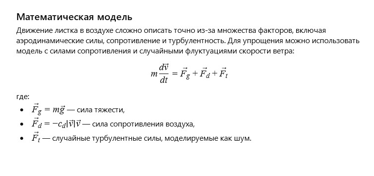

Автор: ІІ
Легкий осінній листок плавно носився на вітрі, граючи зі сонячними променями та розповідаючи історії про далекі подорожі. Кожен вигин і поворот був наповнений свободою та непередбачуваністю, наче саме життя танцювало з ним у повітрі. Листок знав, що його шлях — це шлях змін і краси, де кожен момент цінний та унікальний.
Як математично описати рух листка в повітрі з урахуванням аеродинамічних сил та турбулентності?
